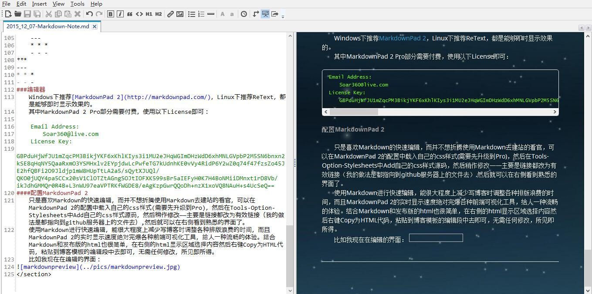

Zhy's Blog~

Markdown 学习笔记
HTML是一种发布格式，Markdown是一种书写格式。
特殊字符
<>& → <>&
<>& → <>&
&lt; → <
方便了<,>,&的输入，空格还是要 来输入。
换行和缩进
换行时输入两个连续空格和一个换行，Markdown将自动将其转为</br>
缩进不能使用空格或制表符缩进，可以使用两个中文全角的空格来对齐，不过切换起来还是比较麻烦。
标题
#HeadTest
##HeadTest
###HeadTest
####HeadTest
#####HeadTest
######HeadTest
HeadTest
HeadTest
HeadTest
HeadTest
HeadTest
HeadTest
HeadTest
=
HeadTest
-
HeadTest
HeadTest
HeadTest
HeadTest
引用
> here quote from link1
> > link1 quote from link2
> ####markdown head
here quote from link1
link1 quote from link2
markdown head
列表
* l1
* l2
+ l3
- l4
3. ol1
7. ol2
1. ol3
***
3. ol1
7. ol2
1. ol3
codehere
12. 34*1 = 12.34
12\. 34*1 = 12.34
- l1
- l2
- l3
- l4
- ol1
- ol2
- ol3
- ol1
- ol2
-
ol3
codehere -
34*1 = 12.34
12. 34*1 = 12.34
Code
`codelines`
(TAB)codeblocks
codelines
codeblocks
粗体、斜体
*italic*
**strong**
_italic_
__strong__
italic
strong
italic
strong
链接、图片
[zhy's blog](https://zhyack.github.io/)

zhy's blog

仅提供简单的链接和图片功能，其他属性的设置仍需<a>、<img>等标签
分割线
***
---
* * *
- - -
编辑器
Windows下推荐MarkdownPad 2，Linux下推荐ReText，都是能够即时显示效果的。
其中MarkdownPad 2 Pro部分需要付费，使用以下License即可：
Email Address:
Soar360@live.com
License Key:
GBPduHjWfJU1mZqcPM3BikjYKF6xKhlKIys3i1MU2eJHqWGImDHzWdD6xhMNLGVpbP2M5SN6bnxn2kSE8qHqNY5QaaRxmO3YSMHxlv2EYpjdwLcPwfeTG7kUdnhKE0vVy4RidP6Y2wZ0q74f47fzsZo45JE2hfQBFi2O9Jldjp1mW8HUpTtLA2a5/sQytXJUQl/QKO0jUQY4pa5CCx20sV1ClOTZtAGngSOJtIOFXK599sBr5aIEFyH0K7H4BoNMiiDMnxt1rD8Vb/ikJdhGMMQr0R4B+L3nWU97eaVPTRKfWGDE8/eAgKzpGwrQQoDh+nzX1xoVQ8NAuH+s4UcSeQ==配置MarkdownPad 2
只是喜欢Markdown的快速编辑，而并不想折腾使用Markdown去建站的看官，可以在MarkdownPad 2的配置中载入自己的css样式(需要先升级到Pro)，然后在Tools-Option-Stylesheets中Add自己的css样式源码，然后稍作修改——主要是链接都改为有效链接（我的做法是都指向到github服务器上的文件去）,然后就可以在右侧看到熟悉的界面了。
使用Markdown进行快速编辑，能很大程度上减少写博客时调整各种排版浪费的时间，而且MarkdownPad 2的实时显示速度绝对完爆各种前端可视化工具，给人一种流畅的体验。结合Markdown和发布版的html也很简单，在右侧的html显示区域选择内容然后右键Copy为HTML代码，粘贴到博客模板的编辑段中去即可，无需任何修改，所见即所得。
比如我现在在编辑的界面：
